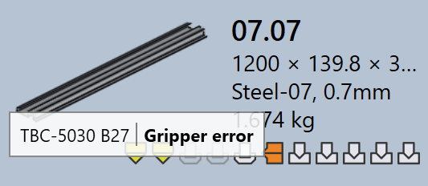

Status narzędzi
W TruSmartCAM każdy kafelek części wizualnie wskazuje status narzędzi tej części dla wszystkich dostępnych maszyn. Pomaga to użytkownikom szybko zobaczyć, dla których maszyn część ma narzędzia, oraz czy narzędzia są gotowe, wymagają przeglądu lub brakuje ich.
-
Status narzędzi jest wyświetlany bezpośrednio na kafelku części za pomocą ikon i wskaźników kolorów.
-
Każda ikona reprezentuje technologię maszyny (np. Dziurkowanie, Laser).
-
Kolor ikony wskazuje aktualny status narzędzi dla tej maszyny.
Poniższa tabela wyjaśnia znaczenie każdej ikony i koloru, pomagając użytkownikom dokładnie interpretować status narzędzi.

| Ikona maszyny | Opis |
|---|---|
|
Maszyna do cięcia laserowego |
|
Maszyna dziurkująca |
|
Prasa krawędziowa |
Giętarka panelowa |
| Status narzędzi | Opis |
|---|---|
|
Narzędzia są OK |
|
Narzędzia mają ostrzeżenia |
|
Narzędzia mają błędy |
|
Narzędzia niedostępne |
Błędy narzędzi
Błąd CAM (Computer-Aided Manufacturing) występuje podczas fazy narzędziowania lub przygotowania produkcji. Te błędy powstają z powodu problemów, takich jak kolizje narzędzi, brakujące narzędzia lub nieprawidłowe warunki cięcia.
Błędy narzędzi do gięcia
-
Wykryto kolizję i Błąd chwytaka : Konfiguracja gięcia powoduje kolizje narzędzi lub chwytaka podczas symulacji.

-
Błąd przeciążenia i Wąski kołnierz albo otwór za blisko : Narzędzia do gięcia są przeciążone lub otwory znajdują się zbyt blisko linii gięcia, co może uszkodzić część lub narzędzia.


-
Wymaga przejrzenia i Krótki rozstaw wykrawania / matrycy : Konfiguracja narzędzi wymaga ręcznej inspekcji lub wybrana rozpiętość matrycy/stempla jest mniejsza niż wymagana dla części.


-
Zbrojenie nieprzypisane, Niedostateczny zderzak lub Part too big for this machine : Wymagane narzędzia do gięcia nie są dostępne, tylny ogranicznik nie jest prawidłowo skonfigurowany lub część jest zbyt duża dla wybranej maszyny.


Błędy narzędzi tnących
-
Brak warunku cięcia : Warunek cięcia nie jest przypisany do materiału surowcowego, więc cięcie nie może być wykonane.

-
Kontury nieobrobione lub częściowo obrobione : Niektóre kształty lub krawędzie są pominięte lub tylko częściowo pokryte podczas procesu narzędziowania, co sprawia, że część jest niekompletna do cięcia.